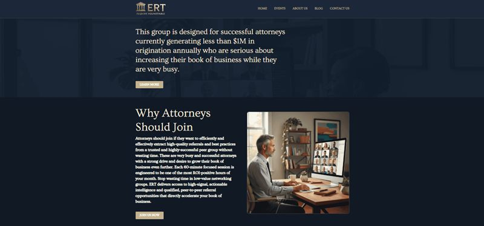
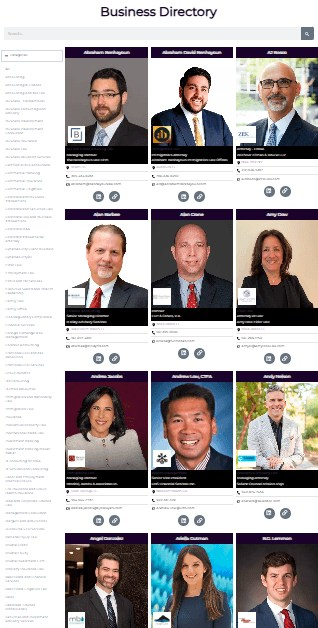

All work
Websites for a referral network
As Marketing Virtual Assistant for The Referral Navigator, I designed and built websites for the network and two attorney roundtables, and added a member directory so attendees can find each other.
- Client
- The Referral Navigator
- Period
- 2023–2024
- Role
- Marketing Virtual Assistant
- Deliverables
- 3 websites · business directory

Three websites
The network needed a public home and a separate site for each attorney roundtable. I designed and built all three.
- TheReferralNavigator.com: pages for attendees, hosts, the directory, events, and the blog
- AttorneyRainmakersRoundtable.com
- EsquireRoundtable.com



Business directory
I added a business directory where members appear with a photo, name, firm, and contact links, sorted by professional category.
This is the only capture of the page, so it’s shown at its original size. Select it to view it larger.

